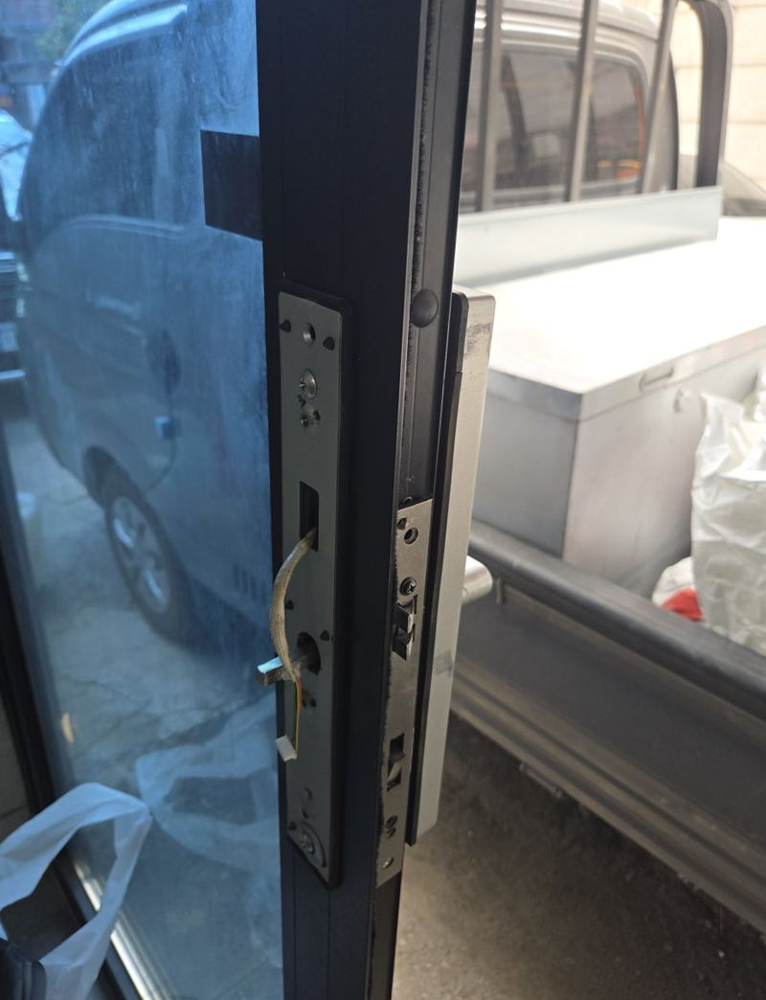
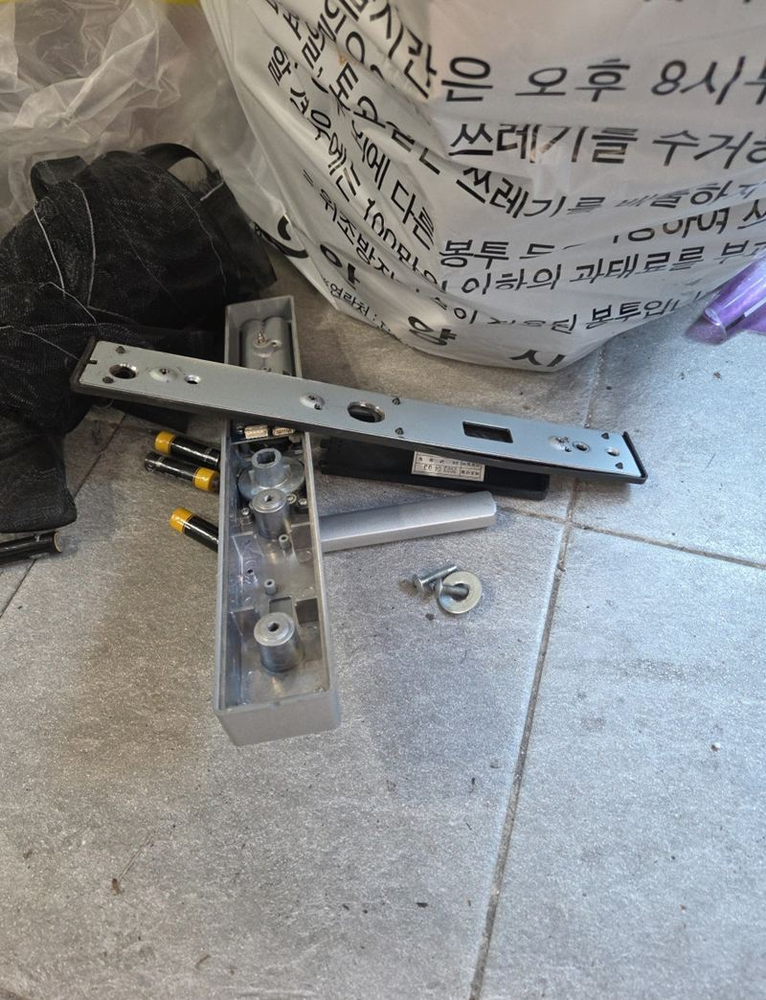
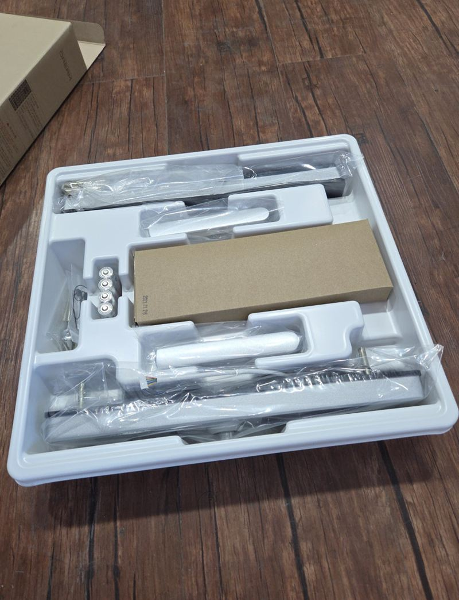
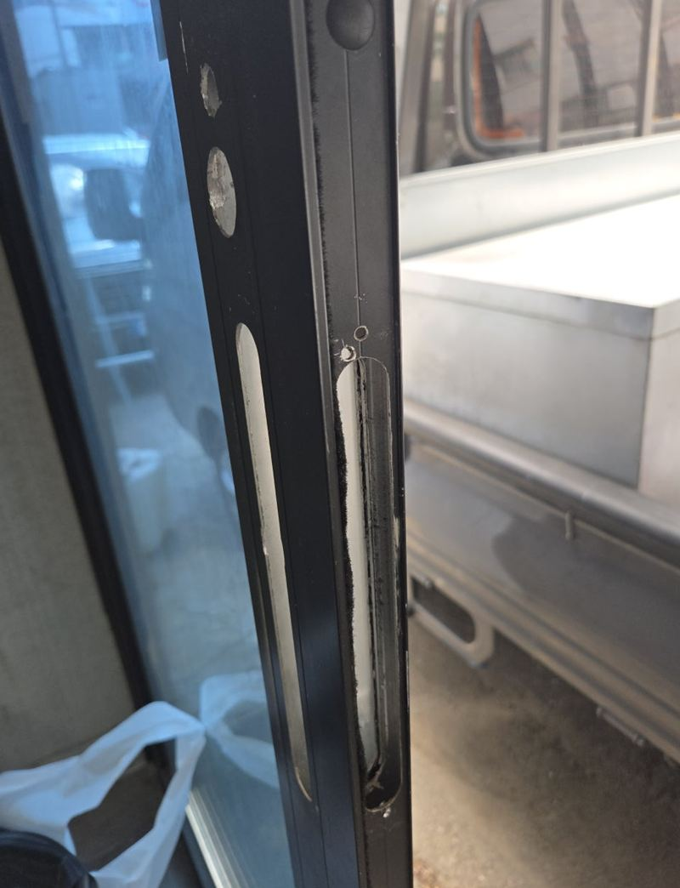
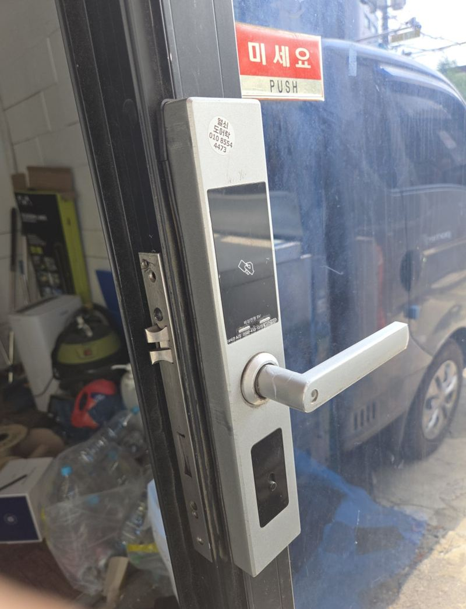
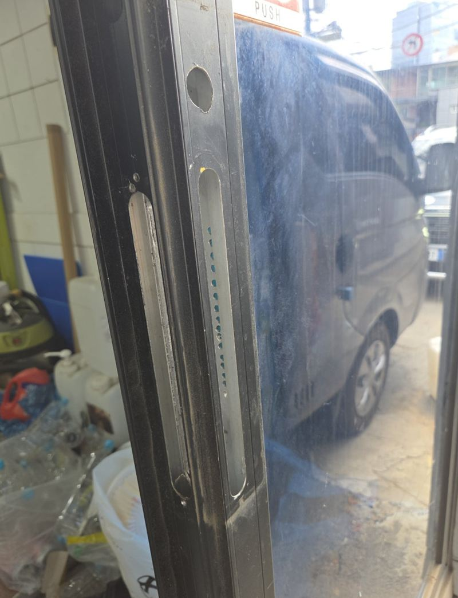

안양 스마트키 도어락 설치·교체 방법
← 밀어서 전후 비교 →
"드나들 때마다 문이 한 번에 안 열리고, 잠금도 제대로 안 돼요." 안양 평촌 상가 출입문 도어락 문의였어요. 처음엔 수리를 원하셨지만, 쓴 기간과 증상을 함께 보니 교체가 낫다고 판단했어요. 고객분은 문에 구멍이 더 생기지 않고, 쓰는 방법도 크게 달라지지 않길 바라셨어요. 기존 타공 위치와 문 두께에 맞는 같은 규격 제품을 골라, 문을 더 깎지 않고 그대로 바꿔 달았어요.
| 현장 | 안양 동안구 평촌 상가 유리 출입문 |
|---|---|
| 증상 | 버튼 입력·잠금 동작이 들쭉날쭉, 래치 걸림 불량, 손잡이를 여러 번 움직여야 열림 |
| 한 일 | 기존 도어락 철거 → 타공·문 두께 재확인 → 같은 규격 제품 설치 → 래치 방향·체결 확인 → 비밀번호·카드 등록 → 사용법 안내 |
| 조건 | 추가 타공 없이, 비슷한 사용 방식 |
도어락, 부품만 갈 수 있을까
도어락이 말을 안 들으면 배터리부터 의심하게 돼요. 배터리를 바꿔도 같다면 안쪽 기어나 래치가 닳았을 가능성이 커요. 이 현장도 문을 닫아도 래치가 걸렸다 안 걸렸다 했고, 손잡이가 걸리는 증상까지 겹쳐 있었어요. 부품 하나만 바꿔도 다른 곳이 이어서 고장 날 수 있는 상태라 통째로 바꾸는 쪽이 이후 관리에도 나았어요.
| 증상 | 먼저 볼 것 |
|---|---|
| 소리는 나는데 안 열림 | 배터리, 모터 |
| 래치가 안 걸림 | 래치·문틀 구멍 위치, 문 처짐 |
| 카드 인식이 들쭉날쭉 | 인식부 고장, 교체 고려 |
구멍을 더 뚫지 않으려면
도어락 교체에서 가장 중요한 건 제품 기능보다 지금 문과 맞는지예요. 타공 위치가 다른 제품을 억지로 달면 문을 더 깎아야 하고, 남은 옛 구멍이 보여 보기 싫어져요. 그래서 기존 제품을 떼어 낸 뒤 타공 위치와 문 두께를 다시 재고, 새 제품이 그대로 들어가는지 한 번 더 확인했어요.




달고 나서 꼭 시험해 본 것
본체 연결과 래치 방향
바깥 본체와 안쪽 본체를 연결하고, 문이 닫히는 방향에 맞게 래치를 맞췄어요.

여닫이 반복
문을 여러 번 열고 닫으며 걸림과 잠김을 확인했어요.

비밀번호·카드 등록
고객분 앞에서 비밀번호와 카드를 등록하고 직접 열어 보시게 했어요. 안쪽 비상 개방 방법도 함께 알려 드렸어요.
고객분은 "문이 제대로 안 잠겨 계속 신경 쓰였는데 작동이 훨씬 부드러워졌다, 문에 구멍을 더 내지 않아서 깔끔하다"고 하셨어요.
이럴 때 도어락 문의가 많아요
- 잠기지 않아요래치나 모터 쪽 문제가 많아요.
- 손잡이가 걸려요안쪽 기어가 닳은 경우예요.
- 카드 인식이 불안해요인식부가 노후된 신호예요.
- 이사 후 바꾸고 싶어요비밀번호·카드를 새로 쓰려면 교체가 깔끔해요.
상가 출입문 도어락, 이 점이 달라요
- 사용하는 사람이 많아요직원마다 카드나 번호를 따로 등록할 수 있는 제품이 관리하기 편해요.
- 여닫는 횟수가 많아요가정집보다 래치와 손잡이가 빨리 닳아서 체결 상태를 자주 봐 주세요.
- 유리 출입문이 많아요알루미늄 틀 두께에 맞는 제품을 골라야 추가 가공 없이 달 수 있어요.
도어락 교체 질문
가정집 현관문도 하나요?
아파트·빌라 현관문, 상가 출입문 모두 해요.
번호키를 지문 인식으로 바꿀 수 있나요?
타공 규격이 맞는 제품이 있으면 가능해요. 문 두께를 먼저 확인해요.
배터리는 얼마나 가나요?
사용량에 따라 다르지만, 경고음이 나면 바로 바꿔 주세요.
문이 처져서 래치가 안 걸려요.
그럴 땐 도어락보다 경첩·문 처짐을 먼저 잡아야 해요.
쓰던 도어락을 다른 문에 옮겨 달 수 있나요?
고장 난 게 아니라면 규격이 맞는 문에 옮길 수 있어요. 문 두께와 타공 위치가 같아야 해요.
유리문에도 달 수 있나요?
유리 출입문은 알루미늄 틀에 맞는 전용 제품을 써요. 이 현장도 틀 규격에 맞춰 골랐어요.
비밀번호를 잊어버렸어요.
제품마다 초기화 방법이 달라요. 안쪽에서 초기화하는 방법을 안내해 드려요.
다른 현관문·출입문 현장
지금 도어락 앞·뒤 사진과 문 옆면 사진을 보내 주세요.
전화 상담 010-4517-9872